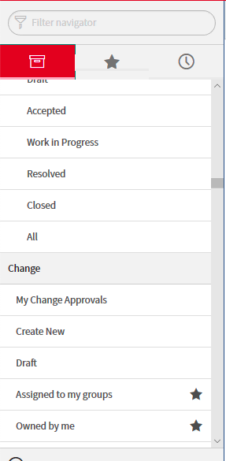
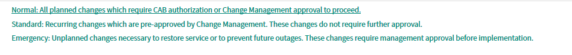
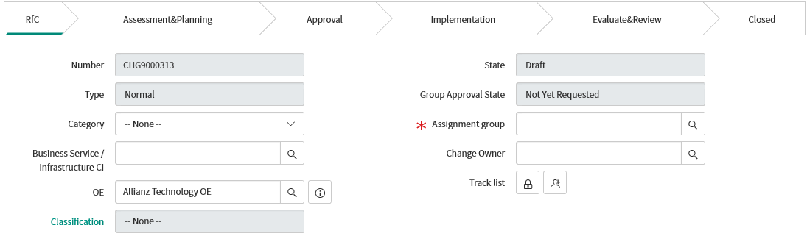
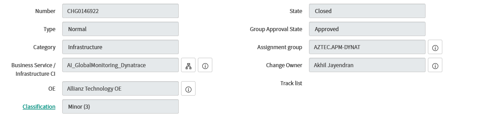
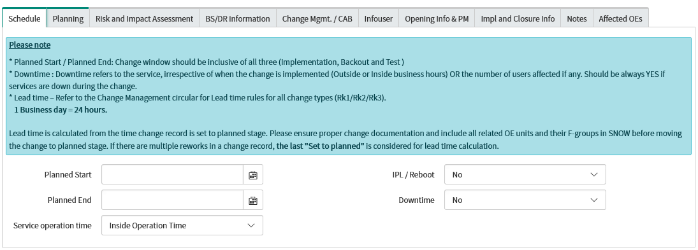
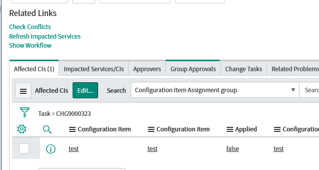
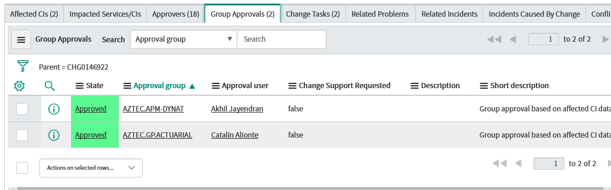
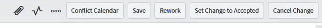

Change –> create new option.
Normal.
.
you can use below example to fill data
.
Add configuration lines to the hosts config of subsystem Dynatrace 1. Change Description (Please explain the change activity and its purpose in detail)
Add configuration lines to the hosts config of subsystem Dynatrace in order to install the agent automatically .
2. Key contact during change implementation. (Name, Phone number, Email id)
IBM.DS.UNIX.EUR Allianz.UNIX.BAU@pl.ibm.com and Global Monitroing team
3. Which is/are the Affected/Related environment in this change . (Development, Test, Production) ?
Production
4. Which Application's / Services are affected/related ?
<team >
5. Is this change related to CORE Data Center Network Devices ? Yes/No
NO
6. Have all the Affected Configuration Item's added in affected CI section? Yes/No
Yes
7. CI Type ( e.g - Server, DB, Mainframe, Router, Switches, Firewall . .etc.)
Servers
8. Critical time of implementation during the change window ?
<Date and time >
9. Are there any conflicts with any other parallel running changes ? YES/NO ?
NO conflicts
Dynatrace Agent is required to monitor Application performance.
Add the configuration lines to the hosts config of subsystem Dynatrace
<HOSTNAME>:<ENVIRONMENT>:<HOSTGROUP>:<INSTALLMODE>:[<HOST-PROPERTY-LIST>] ( updated in the task )
and
Add the Dynatrace subsystem to the hosts and trigger a sysconf update.```
remove all configuration from host file NA Check all agents are connected successfully in Dynatrace GUIlow No impact on exisiting service ,
• Detailed description of the possible worst case scenario if the change fails.
no impact we can revert the chnage with in 15 mins
• What needs to be done in the worst case scenario ?
uninstall the dynatrace agent ```
`low'
least probability
• What risk mitigation steps have been taken to reduce the probability of impact?
This agent is already installed and running in 100+ servers ```
NO `NO`
`AMOS.CHG-CHG_MGMT`


Implementation taskAccording to your change According to your change IBM.DS.UNIX.EUR`Add Dynatrace hosts in SYSCONF`
Setp 1: Add following configuration lines to the hosts config of subsystem Dynatrace
(Location:OS_independent/filedir.sc/tmp/dynatrace/hosts.txt)
<HOSTNAME>:<ENVIRONMENT>:<HOSTGROUP>:<INSTALLMODE>:[<HOST-PROPERTY-LIST>]
Step 2: Add the Dynatrace subsystem to the hosts and trigger a sysconf update.(eg below)
sla27334.srv.allianz:prod:az-tech-rap-argo:full: [ProfitCenter=C49,CostCenter=tbd,ServiceID=8000142,Department=A-GP03RAP]
Step3 : Check Ps-eaf |grep -i Dynatrace ( to confim the agent is running fine )
Step4 : contact Change owner and confirm the agent is successfully registred in Dynatrace
